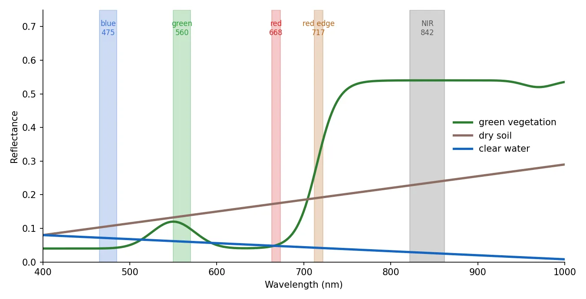
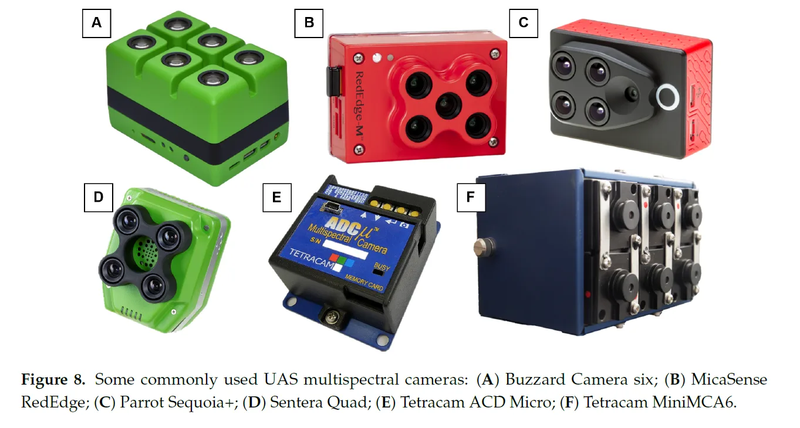
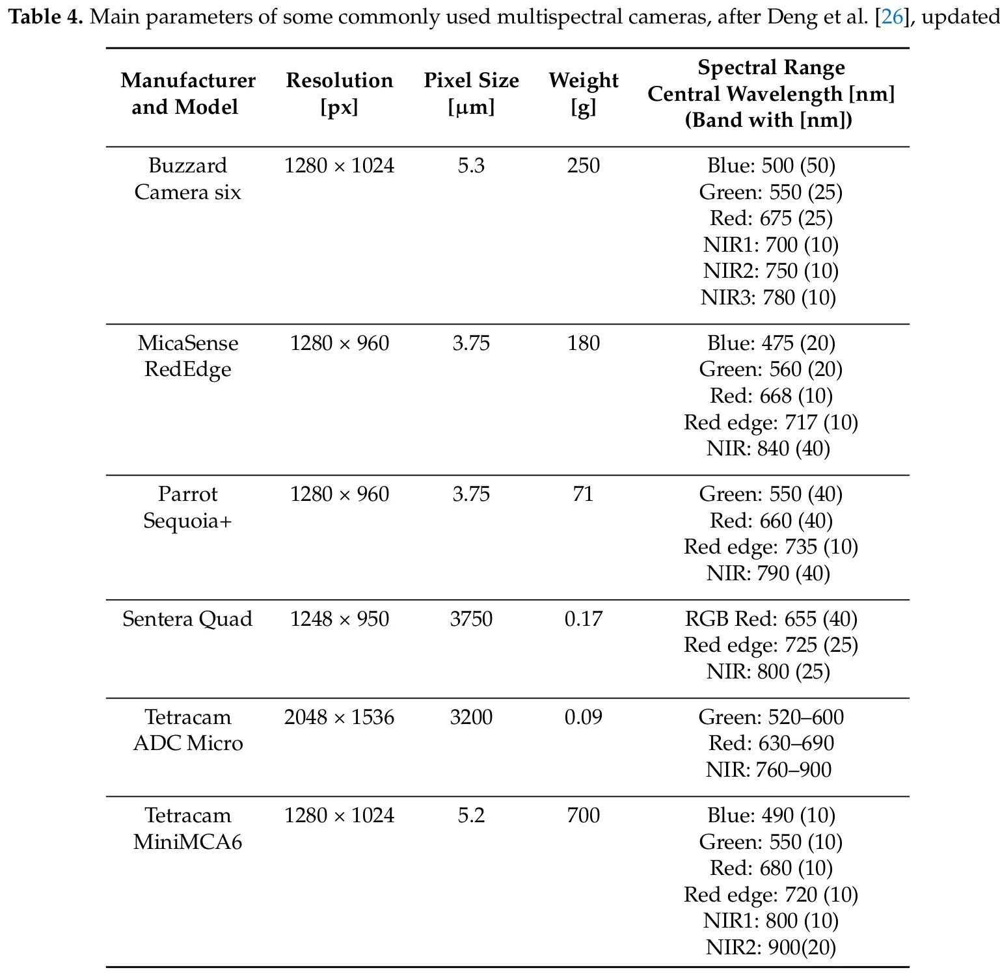
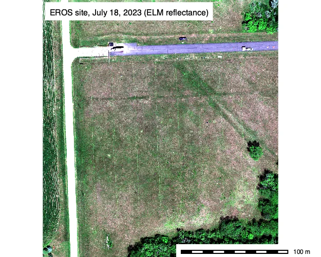
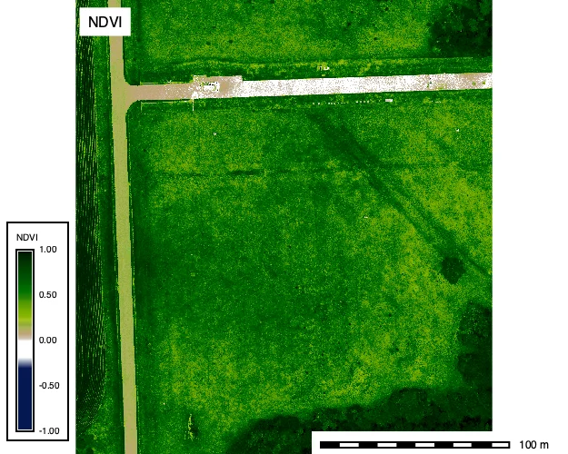
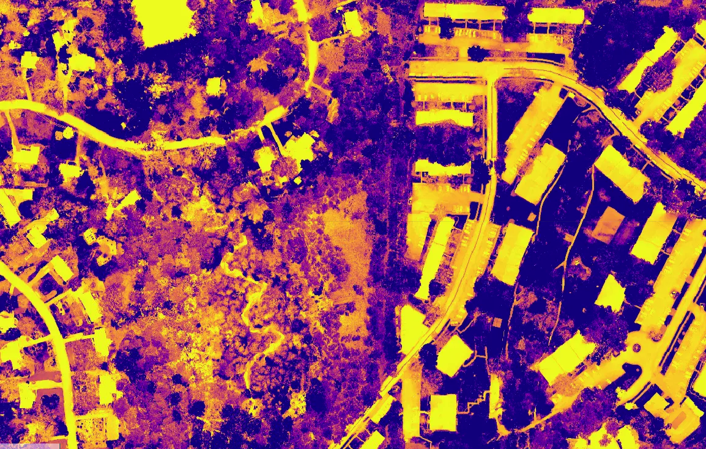
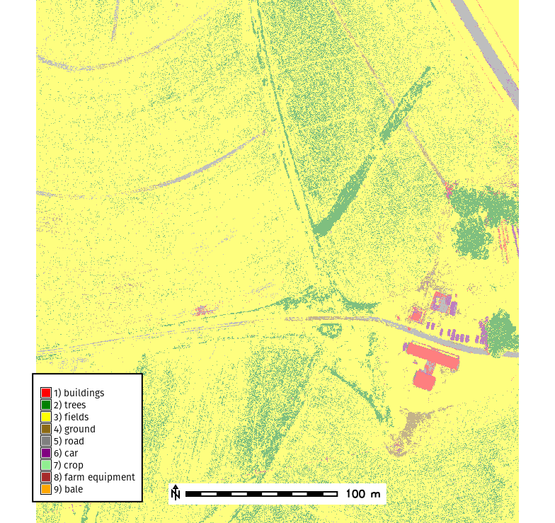

Center for Geospatial Analytics at North Carolina State University
Car, house, lake, tree, forest, etc..
Each pixel is given a semantic label
The image is segmented into objects (groups of pixels) and the objects are classified
The entire image is classified into a semantic scene
Labeled features are used to train ML model
May require significant amount of training data.
Subject to the nonstationarity nature of spatial-temporal data
Random Forest, Gradient Boot, SVM
Data is classified through statistical modeling.
No training data is required
Classes are not defined and require interpretation
k-means, ISODATA

Schematic spectra; the band positions are those of the MicaSense RedEdge (center wavelength, width in the shaded strip).
| Band | Typical range | What it responds to |
|---|---|---|
| Green | 500 to 600 nm, peak near 550 | Chlorophyll reflection; healthy leaves look green |
| Red | 600 to 700 nm | Chlorophyll absorption; low for vegetation, higher for soil |
| Red edge | 700 to 730 nm | The transition from absorption to NIR reflection; sensitive to chlorophyll content and stress |
| NIR | 700 nm to 1.3 µm | Leaf cell structure; the strongest reflectance of healthy vegetation |


Figure and table from Jeziorska (2019). One lens and sensor per band, so the bands are offset and aligned in processing.


MicaSense RedEdge-MX Dual, 10 bands, July 18, 2023, EROS calibration site, South Dakota (Irwin et al. 2025). NDVI from the 668 and 842 nm bands: grass 0.5 to 0.7, crop rows and trees 0.8 to 1, roads near zero.
| Index | Formula | Bands | Purpose |
|---|---|---|---|
| NDVI | (NIR - Red) / (NIR + Red) | NIR, red | Green vegetation; 0.2 to 0.8 for crops and forest |
| NDRE | (NIR - RedEdge) / (NIR + RedEdge) | NIR, red edge | Chlorophyll in dense canopies, late season crops |
| SAVI | (1 + L) (NIR - Red) / (NIR + Red + L), L = 0.5 | NIR, red | Sparse vegetation over bright soil |
| GNDVI | (NIR - Green) / (NIR + Green) | NIR, green | Chlorophyll, less saturation than NDVI |
| NDWI | (Green - NIR) / (Green + NIR) | green, NIR | Open water |
| VARI | (Green - Red) / (Green + Red - Blue) | RGB | Green vegetation from RGB |
| GLI | (2 Green - Red - Blue) / (2 Green + Red + Blue) | RGB | Green vegetation from RGB |
| NDBI | (SWIR - NIR) / (SWIR + NIR) | SWIR, NIR | Built-up areas (satellite sensors) |

\[ VARI = \frac{(Green - Red)}{(Green + Red - Blue)} \]
| Reference Predicted | Forest | Water | Urban | Agriculture | User’s Accuracy (%) |
|---|---|---|---|---|---|
| Forest | 50 | 2 | 3 | 0 | 90.9 |
| Water | 1 | 45 | 0 | 4 | 88.2 |
| Urban | 2 | 1 | 40 | 7 | 80.0 |
| Agriculture | 0 | 3 | 5 | 42 | 85.7 |
| Producer’s Accuracy (%) | 94.3 | 86.5 | 83.3 | 79.2 |